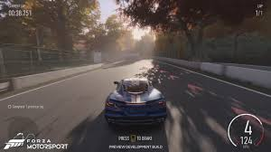
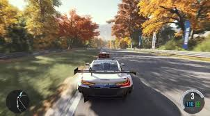

Forza Motorsport (2023) es la última entrega principal de la saga de simuladores de carreras desarrollada por Turn 10 Studios y publicada por Xbox Game Studios. Lanzado en octubre de 2023, este título es un reinicio completo de la serie, ofreciendo una experiencia más realista y técnica que nunca antes, a la par con los avances de la nueva generación de consolas, especialmente la Xbox Series X/S y PC.
¿De qué trata Forza Motorsport?
Forza Motorsport es un simulador de carreras que pone un gran énfasis en la realidad física y la precisión. A diferencia de otros títulos de carreras que se centran en la acción más arcade, Forza Motorsport busca ofrecer una experiencia que simula de manera más exacta la dinámica de los vehículos, el comportamiento de los circuitos, las condiciones climáticas, y la gestión de los coches. El juego incluye una amplia variedad de coches y circuitos reales, con un enfoque en la personalización de vehículos y la mejora de habilidades de conducción.
La entrega de 2023 actúa como un reinicio de la franquicia, lo que significa que si bien sigue siendo parte del mismo universo, también introduce nuevas mecánicas, un nuevo motor gráfico, y un enfoque renovado hacia el realismo y la jugabilidad. La historia o el contexto es menos relevante en este título, ya que se trata más de una simulación purista de carreras, donde los jugadores pueden crear su propio camino y progresar a través de diversos campeonatos, desafíos y competiciones.
 